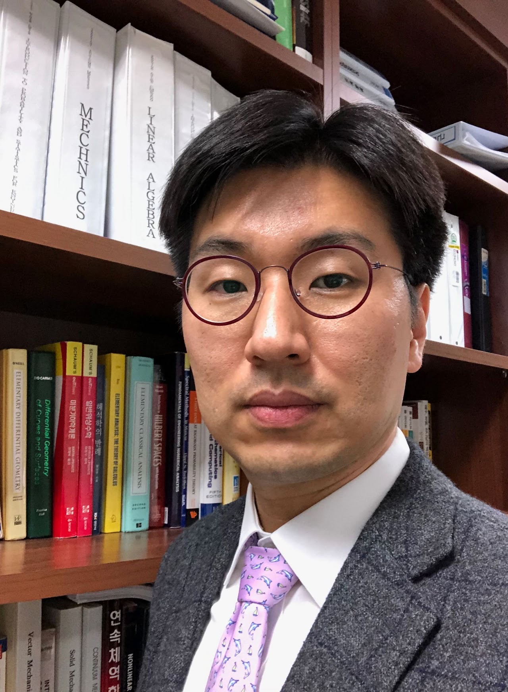
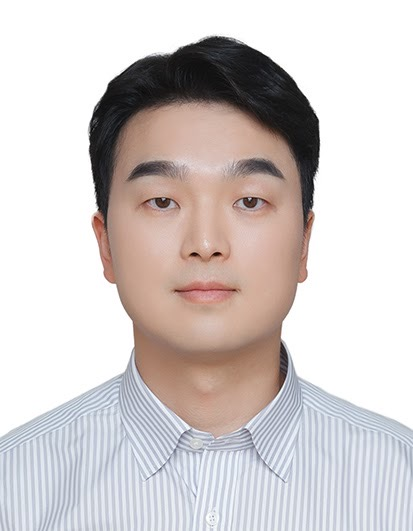
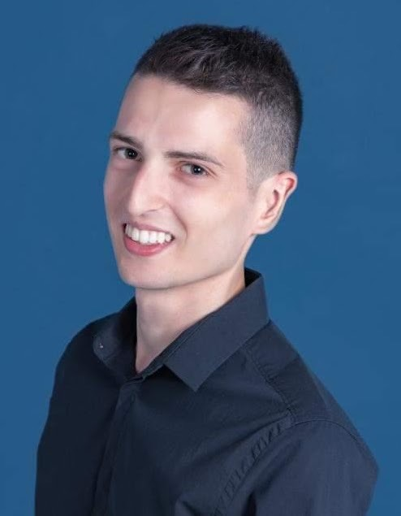
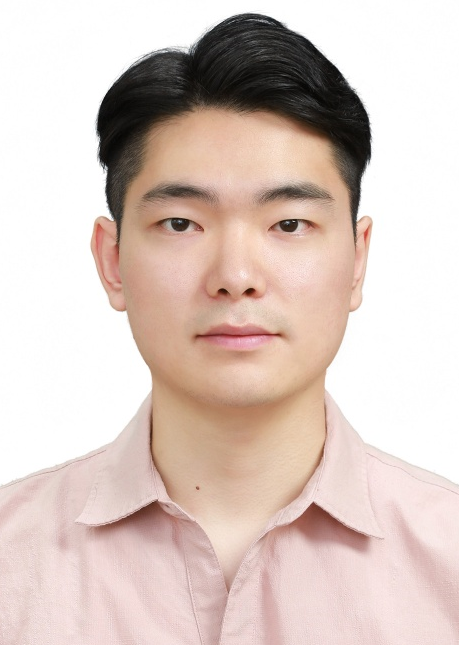
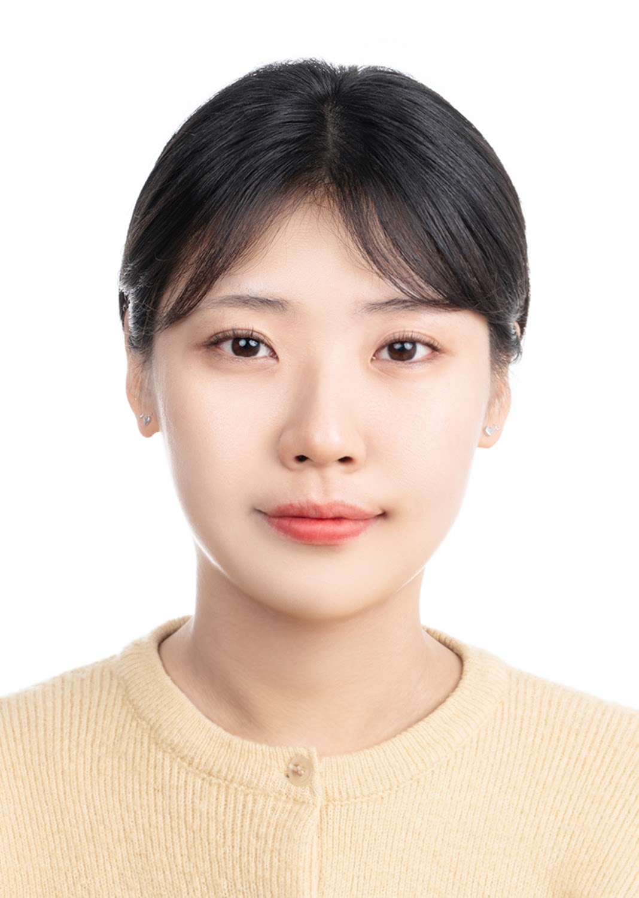
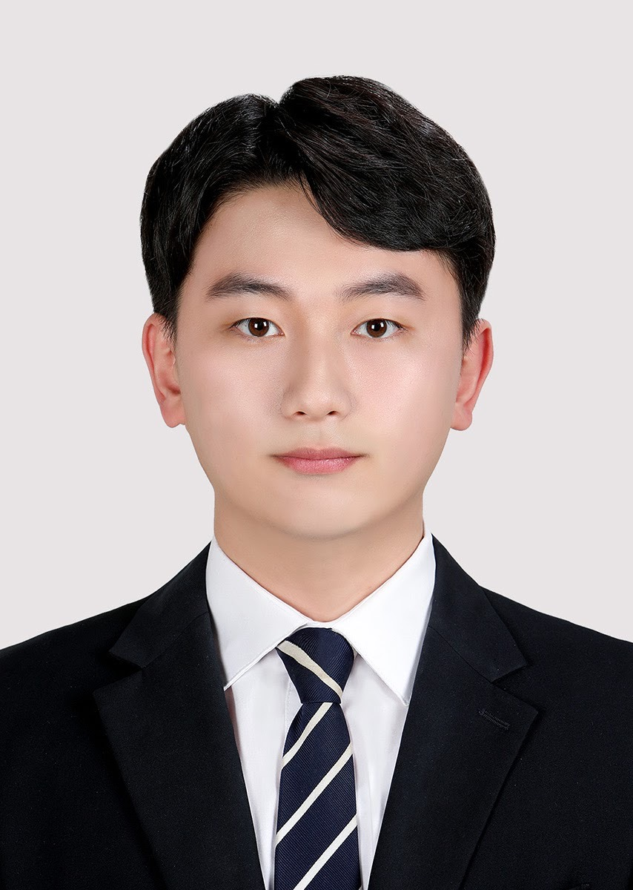
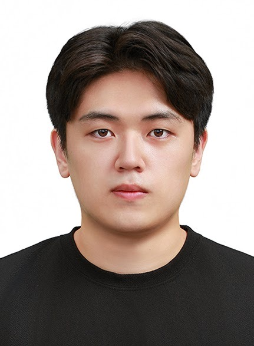
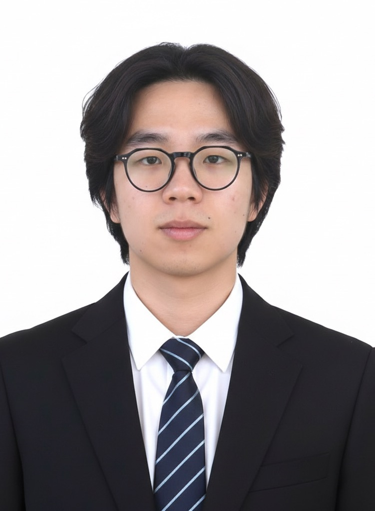

구성원
AMDL의 연구는 서로 다른 관심사를 가진 연구자들이 함께 만들어 갑니다. 관심 분야를 누르면 관련 연구로 이동합니다.

지도교수
교수 연구실 AS 611 · nkim@sogang.ac.kr







졸업 Aug 2018
오스템임플란트
졸업 Aug 2018
한국시험인증산업협회
졸업 Feb 2019
LG전자
졸업 Feb 2020
서울대 반응성 유동 연구실 박사과정
졸업 Feb 2022
KAIST 적층제조·반도체 융합공정 연구실 박사과정
졸업 Aug 2024
한국GM